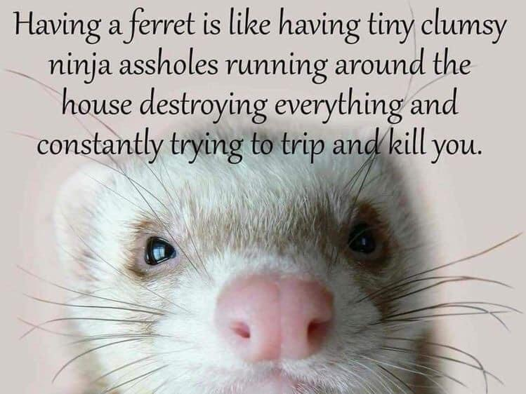
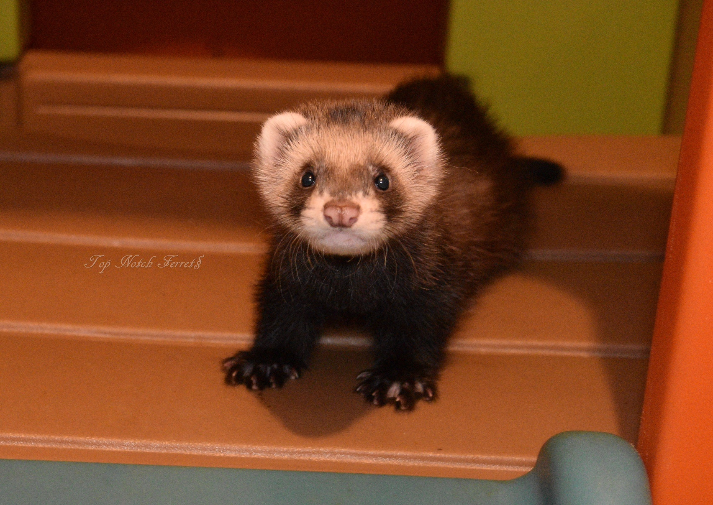
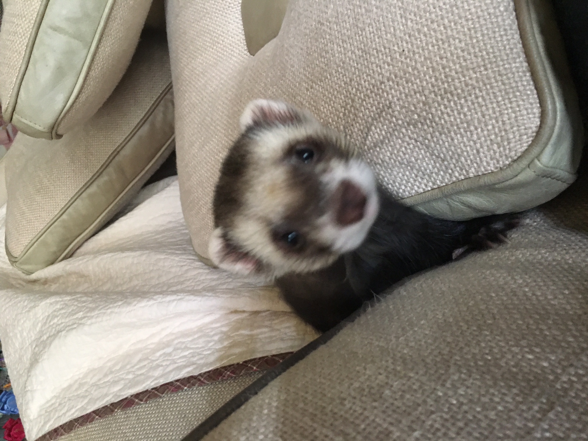
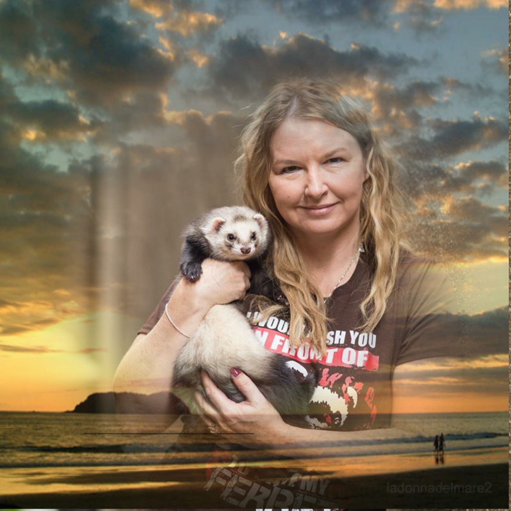
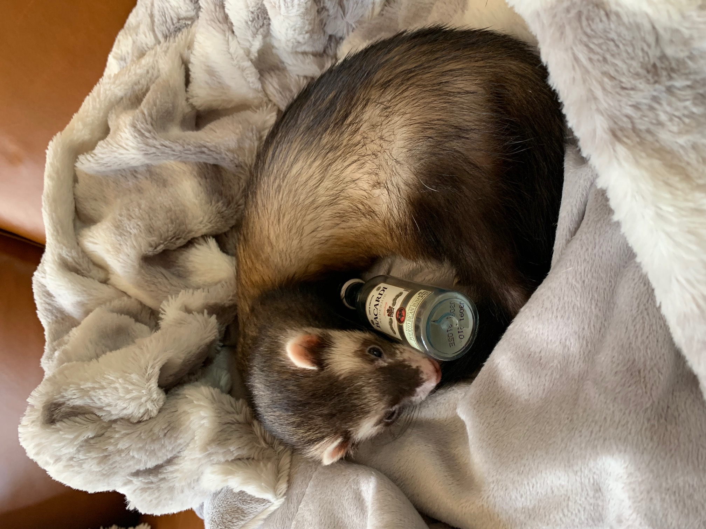
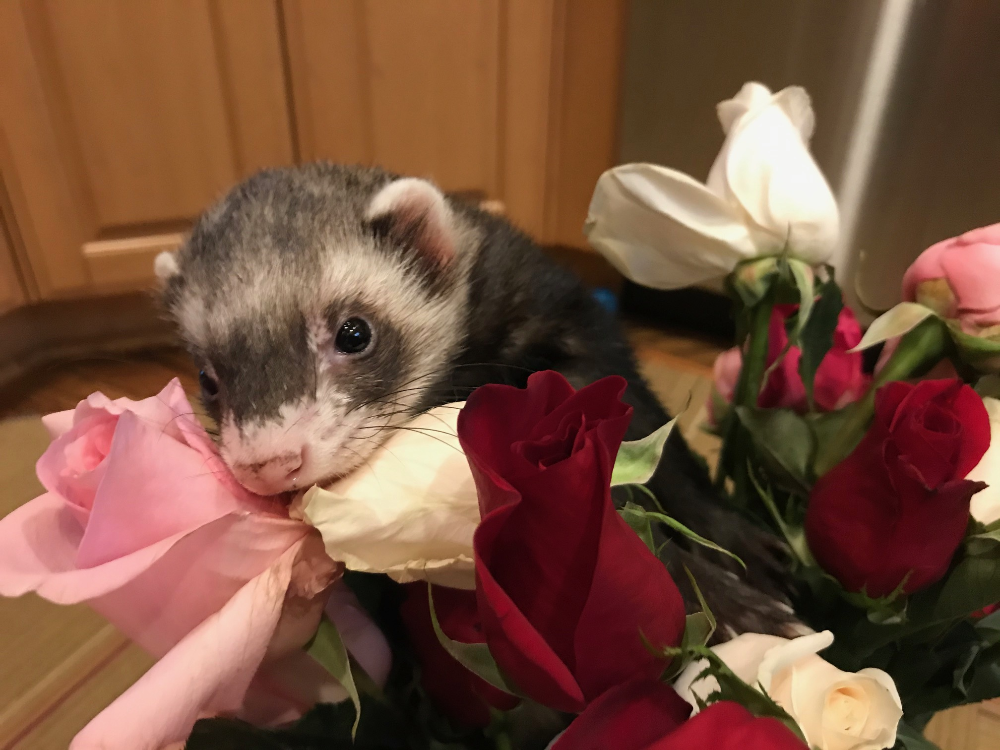
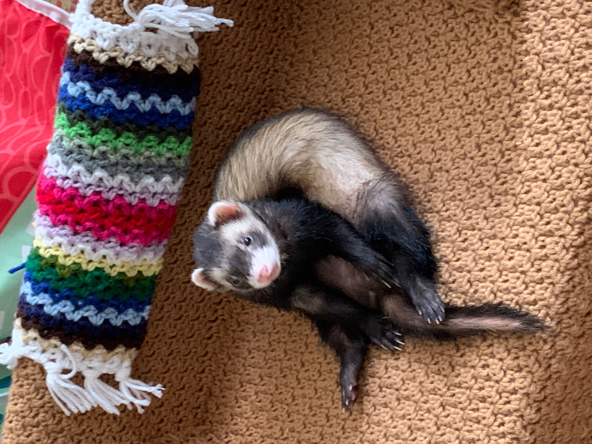
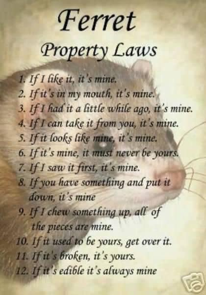

“Animals are such agreeable friends—they ask no questions; they pass no criticisms.” George Eliot, British Author

I am the major domo for two feisty ferrets, born September 2017. Lucas is a ferret-polecat mix while George is a domestic ferret from Marshall farms.


Ferrets are very playful with natural curiosity. Lucas weighs in at almost four pounds with tremendous athletic ability...this is a challenge in the house.


George...



